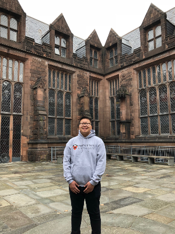

About Me
.jpg)
My name is Benjamin Tsimmuaj Lee, and I’m from Fresno, California.
Favorite Food and Beverages
.jpg)
Through my travels, I’ve tried different foods, for example when I visited Princeton, New Jersey, I tried shawarma, which I soon began to like eating. While I was in New York city, I tried a New York style pizza with pineapple, which is my favorite. My beverages of choice consist of mint lemonade, water, and boba.
Achievements
.jpg)
Some of the activities I’ve achieved in my sixteen years of life, consist of passing my advanced placement history class with a score of three, visiting cities such as New York, Philadelphia, and Los Angeles, and being able to help my parents by working at their business.
Hobbies
.jpg)
What I do in my free time is play tennis, whether it’s playing with my old tennis teammates or my cousins. When I’m at home, I usually like to sit back and watch shows on Netflix, some shows that I’ve finished watching, consist of, All American, Friends, and The Office.
The Plan
My four year plan is to attend a four year college, private or public, and major in economics. What I plan to do with my economics degree is become an investment banking analyst. I do plan to attend business school to obtain an MBA, so that I can become an investment banking associate.